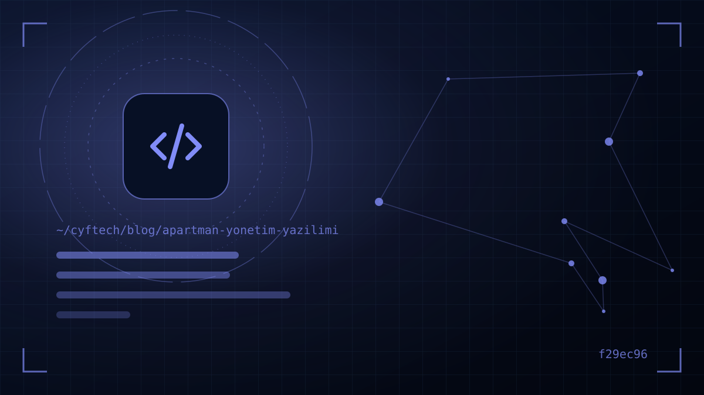

物业费账本在一处，银行流水在另一处，欠费名单在 WhatsApp 群里，报修请求在管理员的手机上。公寓管理看似是一份志愿性质的工作，但本质上关乎金钱、法律和沟通；合适的软件能把这三者集中到一个地方。
从只有几户的公寓楼到拥有数百个独立单元的大型社区，管理者面临的问题都一样：物业费是否按时收齐？谁欠了多少？钱花在了哪里？住户是否及时知情？公寓物业管理软件能把这些问题的答案变成人人可见的透明体系。
市场上的小区物业管理软件众多，宣传介绍也大同小异。本文不推荐某一款产品，而是介绍选择时应关注的标准：是否符合《区分所有权法》、物业费与滞纳金计算、在线收款、KVKK、移动端访问、报表以及技术支持。文末还附有一份比较软件时可以使用的检查清单。
为什么需要公寓物业管理软件？
用账本和 Excel 管理，在只有几户的小公寓里还能应付一阵子。但随着户数增加、管理员更替和租户流动加快，问题会越来越大：
- 账目混乱：哪笔款项属于哪个月、哪个费用科目变得模糊不清；交接时就会暴露出亏空。
- 缺乏透明度：住户看不到钱花在哪里，信任就会下降，业主大会变成争吵，收费也越来越难。
- 管理员的时间：逐一发消息、开收据、催缴欠款和跟进报修，对志愿担任管理员的人来说是沉重的负担。
- 法律风险：滞纳金计算错误，或在公共区域张贴欠费人名单，都可能让管理方陷入法律纠纷。
好的软件不仅能减轻这些负担，还能让每位业主查看自己的账目，从而增强对管理方的信任。
物业费追踪与滞纳金：依法计算
小区物业管理软件的核心是物业费和欠款追踪。根据第 634 号《区分所有权法》第 20 条，未按时缴纳费用分摊和预付款的业主，须按逾期天数支付每月 5% 的滞纳金。该比例在 2007 年修法时由 10% 降至 5%；您可能仍会遇到按旧比例计算的模板。
评估软件时，请关注以下几点：
- 灵活计费：能否按土地份额、平均分摊或管理规约中的特殊分摊方式设定物业费？燃料、电梯、固定资产等科目能否分别分摊？
- 滞纳金设置：比例、最后缴费日和计算方式（按月或按天）能否根据管理决议调整？账单中是否清楚显示计算过程？
- 业主与租户区分：法律规定，在特定条件下租户须与业主共同承担费用分摊责任。软件应能分别登记业主和租户，并将欠款显示给正确的人。
- 部分付款与冲抵：不足额付款抵扣哪笔欠款、预付款和退款都应清楚记录。
- 个人专属账单：每户都应能查看自己的欠款、付款和滞纳记录。
年度运营预算、决议簿与财务报告
法律要求管理方编制年度运营预算（işletme projesi）。根据《区分所有权法》第 37 条，业主可在收到通知后七日内对运营预算提出异议；已确定的运营预算以及业主大会关于运营费用的决议，被视为《执行与破产法》第 68 条第一款所列的文书。这说明运营预算在追缴物业费时有多么重要。
软件在这一过程中应提供的便利：
- 预算与计划编制：能根据上一年度的实际支出编制新一年的运营预算，并按户拆分份额。
- 预算与实际对比：显示全年各科目偏差情况的报表。
- 现金与银行流水：按照法律规定，收取的款项应存放在以管理人身份、为整栋物业开立的账户中，且所有流水均录入软件。
- 文件归档：保存发票、合同、会议纪要和决议的电子副本。请记住，决议簿必须经过公证；软件不能取代这本簿册，只是帮助理顺秩序。
- 年终财务报告：一键生成可在业主大会上提交的收支表。
自 2023 年 9 月 1 日起，因《区分所有权法》产生的纠纷，在提起诉讼前必须先申请调解。规范保存的账单和记录，无论在调解还是强制执行阶段，都能增强管理方的底气。
在线缴纳物业费：虚拟 POS、转账匹配与提醒
让收费更容易的最有效方法，就是让付款变得毫不费力。住户能用手机刷卡缴纳物业费，“我去银行交”的借口也就不复存在。
- 通过虚拟 POS 刷卡支付：付款时应即时冲抵欠款，并自动生成收据。请事先明确手续费率以及由谁承担手续费。
- 转账 / EFT 匹配：没有备注的转账是管理方最头疼的问题。为每户分配专属参考码，或导入银行流水自动匹配，可以节省大量时间。
- 自动提醒：在最后缴费日前后，通过短信、邮件或应用推送发送个性化提醒。
- 支付安全：银行卡信息不应在软件中处理，而应由持牌支付机构的系统处理；并且应支持 3D Secure。
催缴物业费最有力的提醒，就是让付款点两下就能完成。
KVKK 合规：欠费名单、监控摄像与住户数据
公寓和小区管理方会处理大量个人数据，例如姓名、电话、门牌号、欠费信息、车牌号和监控画面。土耳其个人数据保护委员会近来在这一领域强调了两个重要问题：
- 欠费名单不得张贴在公共区域：根据委员会 2026 年公布的决定，将拖欠物业费住户的信息张贴在电梯、楼门口、走廊等公共区域，违反了第 6698 号法律。建议仅通过相关人员才能访问的渠道进行通知，例如个人专属的应用或封闭渠道。
- 监控摄像头的使用：监管机构关于公寓内使用监控摄像头的公告强调，摄像系统的安装必须同时符合 KVKK 和《区分所有权法》。
软件方面应具备的保障：
- 基于角色的权限：管理员、监事、工作人员和住户应看到不同的界面和不同的数据。住户只能看到自己的欠款。
- 数据位置与备份：数据存放在哪里、多久备份一次，以及合同结束后数据如何交还给您，都应有书面约定。
- 告知文本：应提供向住户说明其数据处理目的的告知文本，必要时还应提供明示同意机制。
- 操作日志：应能追踪谁在什么时候修改了哪条记录；这对安全和管理员交接都很重要。
如需进一步了解符合 KVKK 的数字基础架构，请参阅 符合 KVKK 的网站 一文。
住户沟通、服务请求与移动应用
如今，管理方与住户之间的大部分沟通都在零散的聊天群里进行。在这些群里，通知容易被淹没，个人信息被公开分享，报修也无人跟进。请关注软件是否具备以下功能：
- 公告模块：可通过应用推送，必要时通过短信，将停水、会议通知、维修作业等公告发送给全体住户或指定楼栋。
- 服务请求：住户可以附上照片报修，并跟踪请求状态（已受理、处理中、已解决）的工单系统。
- 移动应用：供住户查看欠款、付款、阅读公告和提交请求的 iOS 与 Android 应用。仅有适配移动端的网页也能用，但要支持推送通知，应用效果更好。
- 管理员界面：供管理员和财务人员处理详细操作的桌面端或网页后台。大型小区的大量数据录入不会在手机上完成。
小区物业管理软件对比表
您可以用下表把收到报价的软件放在一起比较：
| 标准 | 应该问什么？ |
|---|---|
| 物业费与计费 | 是否支持按土地份额、平均分摊和特殊分摊方式？ |
| 滞纳金 | 比例和计算方式能否调整？是否显示在账单中？ |
| 收款 | 是否支持虚拟 POS、转账匹配和自动收据？手续费由谁承担？ |
| 报表 | 能否生成运营预算、预算与实际对比、年终财务报告？ |
| KVKK | 基于角色的权限、数据位置、备份和操作日志如何？ |
| 平台 | 有哪些网页、iOS、Android 和桌面端选项？ |
| 迁移 | 能否导入现有 Excel 数据和期初余额？ |
| 定价 | 按户收费还是固定收费？是否包含短信和 POS 费用？ |
| 技术支持 | 是否提供电话、邮件和培训支持？更换管理员时是否提供交接支持？ |
比较价格时，不要只看月费，而要看包含短信套餐、虚拟 POS 手续费和附加模块费用在内的年度总成本。看似便宜的套餐，加上额外费用后可能并不便宜。
一个案例：我们如何设计 KATSİS？
在开发自有产品的过程中，我们亲身体会过其中不少标准。CYF Tech 开发的 KATSİS 旨在将公寓和小区管理集中到一个后台：物业费与欠款追踪、收支、公告、服务请求、虚拟 POS 在线收款和短信模块协同运作。管理员可使用网页后台和 Windows 应用，住户则可使用 iOS 和 Android 应用。
开发过程中我们得到的最重要的经验是：管理方真正需要的不是功能繁多，而是物业费计算准确、收款便捷、沟通有序。您可以在 我们的项目 页面查看该产品及我们的其他作品。无论选择哪款软件，我们都建议您使用上面的检查清单。
- 是否支持物业费分摊方式（土地份额、平均、特殊）？
- 滞纳金比例和计算方式能否按管理决议调整？
- 是否支持在线支付、转账匹配和自动收据？
- 欠款信息是否仅向本人显示？
- 数据位置、备份以及合同结束后的数据交付是否有书面约定？
- 能否导入现有记录和期初余额？
- 是否已计算包含短信、POS 和附加模块在内的年度总成本？
常见问题
公寓物业费的滞纳金是多少？
根据第 634 号《区分所有权法》第 20 条，未按时缴纳费用分摊或预付款的业主，须按逾期天数支付每月 5% 的滞纳金。如对计算方式有疑问，建议咨询法律专业人士。
可以把拖欠物业费的住户名单贴在电梯里吗？
不可以。土耳其个人数据保护委员会认定，在电梯、入口和走廊等公共区域公布拖欠物业费住户的信息属于违法行为。通知只能通过相关人员才能访问的渠道进行。
小公寓也需要物业管理软件吗？
并非必须，但即使只有几户，在线支付、个人欠款账单和公告功能也能大大减轻管理员的工作，并防止在更换管理员时丢失记录。
公寓物业管理软件的费用如何确定？
通常根据户数或独立单元数量、所选模块和平台来确定。短信套餐和虚拟 POS 手续费往往另行收费；比较时应以年度总成本为准。
因物业费欠款起诉前应该做什么？
自 2023 年 9 月 1 日起，因《区分所有权法》产生的纠纷，在提起诉讼前必须先申请调解。对于基于已确定运营预算的债权，申请强制执行也是一种选择；具体流程应寻求律师协助。
结语
合适的公寓物业管理软件能减轻管理员的负担，加快物业费收缴，最重要的是增强对管理方的信任。选择时，与其看花哨的功能清单，不如关注物业费计算是否合法、收款是否便捷、KVKK 保障是否到位，以及迁移和技术支持流程。
如果您想探讨适合您所在小区或所管理楼宇的方案、近距离了解 KATSİS，或评估为自身管理流程定制软件的需求，欢迎 联系我们.